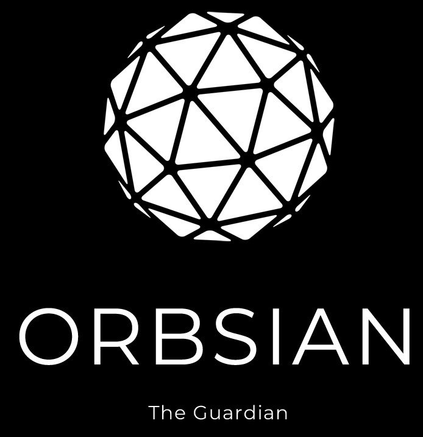

한국어 | ENGLISH |
|  |
SPECIAL PROMOTION (ETH/POLYGON)The 1st 10 delegators with 1M+ tokens will get 10% APR for the first 2 months(60 days).After then you will be automatically qualifying BASIC PROMOTION. If you can see this message, it means that there are still slots for you :) (or you can check the list HERE) BASIC PROMOTION (POLYGON)All other delegators will get 9.1% APR forever.All history will be refered by blockchain transaction history, so you don't have to submit any request to get airdrop. NOTE: * Minimum staking amount: 100,000 ORBS * If you leave before airdrop, you will be disqualified * BASIC promotion will be distributed on Polygon network * Distribution will be on the first day of every month Email: orbsian@gmail.com |